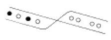
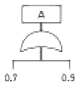
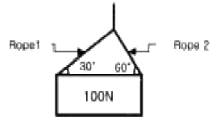

산업안전기사 (2005-03-20 기출문제)
1과목: 안전관리론
1. 인간의 적성과 안전과의 관계를 설명한 것으로 맞는 것은?
- 사고를 일으키는 것은 그 작업에 적성이 맞지 않는 사람이 그 일을 수행한 이유이므로, 반드시 적성검사를 실시하여 그 결과에 따라 작업자를 배치하여야 한다.
- 인간의 감각기별 반응시간은 시각, 청각, 통각 순으로 빠르므로 비상시 비상등을 먼저 켜야 한다.
- 사생활에 중대한 변화가 있는 사람이 사고를 유발할 가능성이 높으므로 그러한 사람들에게는 특별한 배려가 필요하다.
- 집단의 심적 태도를 교정하는 것보다 개인의 심적 태도를 교정하는 것이 더 용이하다.
(정답률: 63%)

2. Bird의 재해분포에 따르면 10건의 경상(물적 또는 인적상해)사고가 발생하였을 때 무상해, 무사고(위험순간)는 몇 건이 발생하는가?
- 300
- 400
- 600
- 800
(정답률: 67%)
3. 안전교육에서 학습경험선정의 원리와 거리가 먼 것은?
- 가능성의 원리
- 계속성의 원리
- 다목적달성의 원리
- 동기유발의 원리
(정답률: 59%)
4. 안전교육과 관련하여 바르게 설명한 것은?
- 교재는 노동부, 산업안전공단 또는 지정교육기관이 작성한 교재를 사용하여야 한다.
- 무재해운동 참여업체 중 무재해목표를 1배이상 달성 하고 무재해가 진행중인 업체는 안전교육을 면제한다
- 무재해교육은 정기교육시간으로 간주되나, 무재해 행사는 그렇지 않다.
- 안전교육의 특성상 통신교육은 허용되지 않는다.
(정답률: 32%)
5. 위험에 대한 안전을 조사할 때의 사전조사에 해당되지않는 것은?
- 적성검사
- 재해기록
- 작업분석
- 안전점검
(정답률: 24%)
6. 탱크, 보일러 또는 반응탑의 내부 등 산소결핍이 우려되는 장소에서 아르곤, 탄산가스 또는 헬륨을 사용하여 용접작업을 시키려고 한다. 이때 사용되어야 할 보호구는?
- 방진마스크
- 방독마스크
- 송기마스크
- 활성마스크
(정답률: 81%)
7. 다음 중 프로그램 학습법의 단점에 해당되지 않는 것은?
- 리더의 지도기술이 요구된다.
- 교육 내용이 고정화되어 있다.
- 학습에 많은 시간이 걸린다.
- 집단사고의 기회가 없다.
(정답률: 53%)
8. 하인리히 법칙에 따르면 상해 사고가 20건이 발생할 때 무상해 사고는 몇 건이 발생하는가?
- 60
- 140
- 200
- 300
(정답률: 53%)
9. 교육 실시 원칙상 한번에 하나 하나씩 나누어 확실하게 이해시켜야 하는 단계는?
- 도입단계
- 제시단계
- 적용단계
- 확인단계
(정답률: 56%)
10. 메슬로우의 인간의 욕구중 5번째 단계에 속하는 것은?
- 존경
- 사회
- 자아실현
- 안전
(정답률: 69%)
11. 다음 중 하인리히는 인적사고 중 1:29:300의 법칙을 적용하였다. 여기에서 300의 의미는?
- 상해가 없는 경우
- 경상
- 중상
- 부상
(정답률: 78%)
12. 방진마스크의 선정기준에 해당되지 않는 것은?
- 배기저항이 낮을 것
- 흡기저항이 높을 것
- 사용적이 적을 것
- 시야가 넓을 것
(정답률: 58%)
13. 안전관리의 일상점검 업무 단계를 설명한 것이다. 옳게 연결된 것은?
- 실상파악 - 대책결정 - 결함발견 - 대책실시
- 결함발견 - 대책결정 - 실상파악 - 대책실시
- 실상파악 - 결함발견 - 대책실시 - 대책결정
- 실상파악 - 결함발견 - 대책결정 - 대책실시
(정답률: 82%)
14. 안전교육 계획수립시 고려할 사항이 아닌 것은?
- 필요한 정보를 수집한다.
- 현장의 의견을 충분히 반영한다.
- 정부규정에 의한 교육에 치중한다.
- 안전교육 시행체계와의 관련을 고려한다.
(정답률: 83%)
15. 다음은 물건의 정리를 나타낸 그림이다. 관계 없는 것은?

- 근접의 요인
- 동류의 요인
- 폐합의 요인
- 연속의 요인
(정답률: 58%)
16. 안전조직 중 안전스탭의 주역할이 아닌 것은?
- 안전관리 목표 및 방침안 작성
- 정보수집과 주지, 활용
- 실시계획의 추진
- 기본방침 및 안전시책 시달
(정답률: 39%)
17. 재해발생원인을 관리적인 측면에서 분류하면 기술적 원인, 교육적 원인, 작업관리상 원인으로 분류할 수 있다. 교육적 원인이 아닌 것은?
- 안전지식의 부족
- 안전수칙을 잘못 알고 있음
- 경험, 훈련 등이 서투름
- 작업준비 불충분
(정답률: 77%)
18. 다음 중 작업자세와 관련하여 틀린 것은?
- 가능한 한 신체를 작업대에 가깝게 유지한다.
- 가능하면 의자에 계속 앉아서 일하게 하여 자세의 안정성을 유지하여 안전을 확보하고 품질을 균일하게 한다.
- 안정된 지점을 벗어날 정도로 손을 지나치게 뻗지 않는다.
- 조립라인이나 기계적인 작업의 작업면은 팔꿈치 높이보다 5-10cm 낮게 설정한다.
(정답률: 55%)
19. TWI의 교육 내용 중 인간관계 관리방법 즉 부하통솔법을 주로 다루는 것은?
- JIT(Job Instruction Training)
- JMT(Job Method Training)
- JRT(Job Relation Training)
- JST(Job Safety Training)
(정답률: 49%)
20. 브레인스토밍팀 미팅 기법의 4원칙에 해당되지 않는 것은?
- 수정발언
- 자유분방
- 요점발언
- 비판금지
(정답률: 72%)
2과목: 인간공학 및 시스템안전공학
21. 인간 실수의 형태를 크게 작위(Commission)실수와 부작위(Omission)실수로 나눌수 있다. 다음 중 작위(Commission) 실수를 바르게 설명한 것은?
- 생략한 형태의 실수
- 다른 것으로 착각하여 실행한 실수
- 수행해야 할 작업을 수행하지 않는 실수
- 불안전한 행동에 의한 실수
(정답률: 42%)
22. "작업설계시의 딜레마(dilemma)" 란?
- 안전투자와 기업이윤간의 딜레마
- 작업능률과 작업만족도간의 딜레마
- 작업확대와 작업윤택화간의 딜레마
- 생산목표와 생산수단간의 딜레마
(정답률: 24%)
23. 다음은 초기고장과 마모고장의 고장형태와 그 예방대책에 관한 내용이다. 연결이 잘못된 것은?
- 초기고장 - 감소형
- 마모고장 - 증가형
- 초기고장 - 디버깅
- 마모고장 - 스크리닝
(정답률: 63%)
24. 단순반복 작업으로 인하여 발생되는 건강장애 즉 CTDS 의 발생요인이 아닌 것은?
- 작업적 과도한 힘의 요구
- 부적합한 작업자세
- 긴 작업주기
- 저온환경
(정답률: 29%)
25. 작업장의 색은 매우 중요하다. 색을 선택할 때 기본 조건이 아닌 것은?
- 자극이 강한색은 피한다.
- 밝은 색은 상부에 어두운 색은 하부에 둔다.
- 차분하고 밝은색을 선택한다.
- 순백색을 선택한다.
(정답률: 63%)
26. 다음 시스템 A의 확률은?

- 0.64
- 0.82
- 0.92
- 0.97
(정답률: 65%)
27. 신호검출이론의 적용대상이 아닌 것은?
- 성역화
- 품질검사
- 의학처방
- 법정에서의 판정
(정답률: 39%)
28. 다음 중 진동에 의한 영향이 가장 적은 작업은?
- 추적작업
- 시각적 인식작업
- 형태 식별작업
- 수동 제어작업
(정답률: 28%)
29. 다음 중 시스템안전 위험분석(SSHA)을 수행하기 위한 최초의 작업으로서 구상단계나 설계 및 발주의 극히 초기 에 실시되는 것은?
- 예비위험분석(PHA)
- 결함위험분석(FHA)
- 시스템안전성위험분석(SSHA)
- 결함수분석(FTA)
(정답률: 78%)
30. 우리가 흔히 사용하는 시각적 표시장치와 청각적 표시장치 중 청각적 표시장치를 사용하는 것이 더 좋은 경우는?
- 전언이 공간적인 위치를 다룬 경우
- 수신자의 청각계통이 과부하 상태일 때
- 직무상 수신자가 한 곳에 머무르는 경우
- 수신장소가 너무 밝거나 암조응이 요구될 때
(정답률: 60%)
31. 디버깅(debugging)이란?
- 초기 고장기간의 고장원인 도출과정
- 우발 고장기간의 고장원인 도출과정
- 마모 고장기간의 고장원인 도출과정
- 고장원인 도출과는 상관이 없다.
(정답률: 58%)
32. 인간의 신뢰도가 0.6, 기계의 신뢰도가 0.9이고 인간과 기계가 직렬체제로 작업할 때의 신뢰도는 얼마인가?
- 0.43
- 0.54
- 0.65
- 0.76
(정답률: 72%)
33. 예비위험 분석에서 달성하기 위하여 노력하여야 하는 4가지 주요 사항이 아닌 것은?
- 시스템에 관한 주요 사고를 식별하고 개략적인 말로 표시할 것
- 사고를 초래하는 요인을 식별할 것
- 사고발생 확률을 계산할 것
- 식별된 위험을 4가지 범주로 분류할 것
(정답률: 25%)
34. 작업장의 색채를 설명한 것이으로 틀린 것은?
- 지붕은 주위의 환경과 조화를 이루도록 한다.
- 벽면은 주위 명도의 2배 이상으로 한다.
- 창틀에는 흰빛으로 악센트를 준다.
- 바닥의 추천반사율은 40~60%가 좋다.
(정답률: 42%)
35. 인간 기계시스템에서 수동제어 시스템에 속하지 않는 것은?
- 연속적 추적제어
- 프로그램제어
- 계층구조적 제어
- 시켄셜제어
(정답률: 12%)
36. 감각적으로 물리현상을 왜곡하는 지각현상에 해당되는 것은?
- 주의산만
- 착각
- 피로
- 부주의
(정답률: 54%)
37. 위험 및 운전성 검토(HAZOP)의 성패를 좌우하는 중요 요인과 거리가 먼 것은?
- 팀의 무재해 운동 추진 실태
- 검토에 사용된 도면이나 자료들의 정확성
- 팀의 기술능력과 통찰력
- 발견된 위험의 심각성을 평가할 때 그 팀의 균형감각을 유지할 수 있는 능력
(정답률: 30%)
38. 반사율이 80%, 글자의 밝기가 400cd/m2인 VDT화면에 314lux의 조명이 있다면 대비는? [단, 대비의 정의는 (배경광-목표광)/배경광을 사용한다.]
- -0.6
- -1.59
- -5.0
- -6.0
(정답률: 23%)
39. 공장설비의 안전화를 위하여 레이아웃에 대한 검토를 요하는 사항과 거리가 먼 것은?
- 작업의 흐름에 따라 기계설비를 배치시켜 필요없는 운반작업을 극력 배제
- 안전한 통로를 설정하고 작업장소와 통로는 명확히 구분
- 재료, 제품, 공구들을 놓아둘 곳을 충분히 확보할 것
- 필요한 안전장치를 설치할 것
(정답률: 22%)
40. F.T.A(Fault Tree Analysis)란 무엇인가?
- 재해발생을 귀납적, 정성적으로 해석, 예측할 수 있다.
- 재해발생을 연역적, 정성적으로 해석, 예측할 수 있다.
- 재해발생을 연역적, 정량적으로 해석, 예측할 수 있다.
- 재해발생을 귀납적, 정량적으로 해석, 예측할 수 있다.
(정답률: 36%)
3과목: 기계위험방지기술
41. 산업용 로봇의 안전방호사항으로 적합한 것은?
- 정지된 로봇작업의 가동영역에 출입시 정지상태의 종류를 파악해야 한다.
- 로봇작업은 완전자동이므로 안전장치는 필요없다.
- 안전플러그는 항상 방책에 고정되어져야 한다.
- 비상정지기능이 해제된 후 즉시 자동으로 작업이 복구되어야 한다.
(정답률: 48%)
42. 다음 중 동력전달장치에서 재해가 가장 많이 발생하는 것은?
- 치차(gear)
- 벨트(belt)
- 축(shaft)
- 커플링(coupling)
(정답률: 43%)
43. 실제용접에서 정격전류 보다 적은전류로 용접하는 경우가 많은데 이때의 허용 사용률(%) 정의로 맞는 것은?
- (아크발생시간 / 작업시간) × 100
- (아크시간 / 아크시간 + 휴식시간) × 100
- 사용율 = (작업시간 / 아크발생시간) × 100
- (정격2차전류)2 / (실제용접전류)2 × 정격 사용률
(정답률: 52%)
44. 보일러의 안전장치에 해당하지 않는 것은?
- 압력제한스위치
- 압력방출장치
- 고·저수위조절장치
- 비상정지장치
(정답률: 68%)
45. 그림에서와 같이 100 N의 물건을 불안하게 매달았을 때, 로프 1 및 로프 2 에 작용하는 장력의 크기는?

- 로프 1 = 50 N, 로프 2 = 50 N
- 로프 1 = 50 √3 N, 로프 2 = 50 N
- 로프 1 = 50 N, 로프 2 = 50 √3 N
- 로프 1 = 50 √3 N, 로프 2 = 50 √3 N
(정답률: 36%)
46. 프레스의 안전장치 중 가장 완전한 방호가 가능한 안전장치는?
- 수인식
- 손쳐내기식
- 양수조작식
- 게이트가드식
(정답률: 46%)
47. 슬라이드가 내려옴에 따라 손을 쳐내는 막대가 좌우 또는 앞뒤로 왕복하면서 위험점으로부터 손을 보호하여 주는 프레스의 안전장치는?
- 스위프 가아드
- 풀아웃
- 게이트 가아드
- 양손조작장치
(정답률: 42%)
48. 다음 중 보일러에 관한 설명으로서 옳지 않은 것은?
- 수면계의 고장은 과열의 원인이 된다.
- 부적당한 급수처리는 부식의 원인이 된다.
- 안전밸브의 작동불량은 압력상승의 원인이 된다.
- 안전장치가 불량할 때에는 최대사용기압에서 파열하는 원인이 된다.
(정답률: 33%)
49. 축의 설계시 주의할 점이 아닌 것은?
- 변형
- 강도
- 회전방향
- 열응력
(정답률: 42%)
50. 선반에서 사용하는 바이트와 관련된 방호장치는?
- 브레이크
- 터릿
- 칩 브레이커
- 주축대
(정답률: 74%)
51. 2000(rpm)인 연삭숫돌의 지름이 5(cm)이라면 최대원주속도는? (단, π = 3.14임.)
- 78.5 cm/min
- 78.5 m/min
- 314.0 cm/min
- 314.0 m/min
(정답률: 46%)
52. 용접장치에 사용되는 가스 장치실의 구조에 대한 설명 중 틀린 것은?
- 벽의 재료는 불연성의 재료를 사용할 것
- 천정과 벽은 견고한 콘크리트 구조일 것
- 가스누출시 당해 가스가 정체되지 않도록 할 것
- 지붕 및 천정의 재료는 가벼운 불연성의 재료를 사용할 것
(정답률: 55%)
53. 양도, 대여, 설치가 제한되는 위험기계기구에 해당되지않는 것은?
- 보일러
- 프레스
- 선반
- 연삭기
(정답률: 22%)
54. 프레스 작업에서 가장 중요한 점검은?
- 클러치의 정상적 작동 상태
- 동력부분
- 받침대
- 전원장치
(정답률: 59%)
55. 승강기의 안전장치가 아닌 것은?
- 조속기
- 출입문 인터로크
- 이탈방지장치
- 화이날 리미트 스위치
(정답률: 39%)
56. 크레인 로프에 4ton의 중량을 걸어 2m/sec2의 가속도로 감아올릴 때 로프에 걸리는 하중은? (단, 중력가속도는 9.8m/sec2 이다.)
- 4063kg
- 4193kg
- 4243kg
- 4816kg
(정답률: 41%)
57. 기계부품에 작용하는 힘 중에서 안전율을 가장 크게 취하여야 할 힘의 종류는?
- 반복하중
- 교번하중
- 충격하중
- 정하중
(정답률: 49%)
58. 다음 유해·위험기계·기구 중에서 진동과 소음을 동시에 수반되는 기계설비가 아닌 것은?
- 컨베이어
- 사출기
- 아세틸렌용접장치
- 공기압축기
(정답률: 50%)
59. 전동공구 작업시 주의사항으로 틀린 것은?
- 전기드릴 작업시 구멍이 잘 뚫릴 수 있도록 강한 힘을 가해 작업한다.
- 진동공구 사용시 진동방지장갑, 청력보호구, 마스크를 착용하고 작업한다.
- 전기그라인더 사용시 최고회전수 상태에서 작업을 한다.
- 납땜 인두 작업시 배기시설을 확인한 후 작업한다.
(정답률: 51%)
60. 호이스트(hoist)에서 버튼식 조정판에 연결하는 전원은 얼마가 가장 적당한가?
- 200V 이하
- 200V 이상
- 100V 이상
- 100V 이하
(정답률: 41%)
4과목: 전기위험방지기술
61. 코로나 방전이 발생하면 공기 중에 무엇이 생성되는가?
- O2
- O3
- N2
- N3
(정답률: 62%)
62. 아세톤을 취급하는 작업장에서 작업자의 정전기 방전으로 인한 화재폭발 재해를 방지하기 위해서는 인체대전전위는 얼마이하로 유지해야 하는가? (단, 인체의 정전용량 100(PF)이고, 아세톤의 최소 착화에너지는 1.15(mJ)로 하며 기타의 조건은 무시한다)
- 1.5 × 103(V)
- 2.6 × 103(V)
- 3.7 × 103(V)
- 4.8 × 103(V)
(정답률: 27%)
63. 전동기를 운전하고자 할 때 개폐기의 조작순서가 맞는 것은?
- 메인 스위치 - 분전반 스위치 - 전동기용 개폐기
- 분전반 스위치 - 메인 스위치 - 전동기용 개폐기
- 전동기용 개폐기 - 분전반 스위치 - 메인 스위치
- 분전반 스위치 - 전동기용 스위치 - 메인 스위치
(정답률: 62%)
64. 조명기구 선정시 고려하여야 할 사항이 아닌 것은?
- 직사 눈부심이 없을 것
- 반사 눈부심을 적게 할 것
- 필요한 조명을 주며 수직, 경사면의 조도가 적당할 것
- 조명기구는 설치보다 유지관리에 중점을 둘 것
(정답률: 67%)
65. 방폭지역의 구분시 환기가 충분한 장소란 "대기중의 가스. 증기의 밀도가 폭발하한계의 ( )를 초과하여 축적되는 것을 방지하는데 충분한 환기량이 보장되는 장소"를 말한다. 이 때 ( )안 알맞는 수치는?
- 20%
- 25%
- 30%
- 40%
(정답률: 38%)
66. 가습에 의한 부도체의 정전기 대전방지에서 사용할 수 없는 부도체는 다음 중 어느 기를 가진 물질인가?
- OH
- C6H6
- NH2
- COOH
(정답률: 40%)
67. 교류아크 용접기를 용접 중단하였을 경우 용접봉에 인가되는 안전전압[V]은?
- 10 이하
- 25 이하
- 50 이하
- 70 이하
(정답률: 66%)
68. 접지 저항값이 맞는 것은?
- 제1종접지 : 100[Ω]이하
- 제2종접지 : 150/1선지락전류 [Ω]
- 제3종접지 : 10[Ω]이하
- 특별 제3종접지 : 100[Ω]이하
(정답률: 42%)
69. 인체의 전기저항 R을 1000[Ω]이라하면 이때 위험 한계 에너지는 몇 J인가? (단, 통전시간은 1초임)
- 17.22
- 27.22
- 37.22
- 47.22
(정답률: 57%)
70. 지중에 매설된 금속제의 수도관에 접지할 수 있는 경우의 접지 저항값은?
- 1[Ω] 이하
- 2[Ω] 이하
- 3[Ω] 이하
- 4[Ω] 이하
(정답률: 33%)
71. 두가지 용제를 사용하고 있는 어느 도장공장에서 폭발사고가 발생하여 3사람의 부상자를 발생시켰다. 부상자가 입고 있던 조건의 복장으로 정전용량이 120pF 인 사람이 5m 도보후 표면전위를 측정했더니 3000V가 측정되었다. 사용한 혼합용제 가스의 최소 착화에너지는 얼마 이었겠는가?
- 0.56mJ 이상
- 0.54mJ 이하
- 1.09mJ 이상
- 1.08mJ 이하
(정답률: 35%)
72. 정전작업은 일상생활에 불편을 주어서는 아니되므로 시간을 단축하거나 심야에 작업을 하게 된다. 정전작업 종료시 통전을 위한 순서가 올바른 것은?
- 단락접지기구철거 - 개폐기투입 - 작업자에 대한 위험 여부 확인 - 위험표시철거
- 단락접지기구철거 - 위험표시철거 - 작업자에 대한 위험 여부 확인 - 개폐기 투입
- 개폐기투입 - 위험표시철거 - 작업자에 대한 위험 여부 확인 - 단락접지기구확인
- 작업자에 대한 위험 여부 확인 - 단락접지기구 철거 - 개폐기투입 - 위험표시철거
(정답률: 20%)
73. 아아크를 발생하는 고압용 전기기계, 기구는 가연성물질에 인화되지 않도록 벽 또는 천정으로부터 최소 몇[m]이상 이격하여야 하는가?
- 1
- 1.5
- 2.5
- 3.0
(정답률: 27%)
74. 다음은 내압방폭구조의 기본적 성능에 관한 사항이다. 해당되지 않는 것은?
- 내부에서 폭발할 경우 그 압력에 견딜 것.
- 습기침투에 대한 보호가 될 것.
- 폭발이 외부로 유출되지 않을 것.
- 외함 표면온도가 주위의 가연성가스를 점화시키지 않을 것.
(정답률: 63%)
75. 정전기 발생 방지책이 아닌 것은?
- 접지
- 가습
- 보호구의 착용
- 배관내 유속가속
(정답률: 40%)
76. 정전기 발생현상의 분류에 해당되지 않는 것은?
- 마찰대전
- 박리대전
- 유동대전
- 유체대전
(정답률: 58%)
77. 전동기용 퓨우즈의 사용 목적이 알맞는 것은?
- 회로에 흐르는 과전류 차단
- 과전압 차단
- 누설전류 차단
- 역전시 과전류 차단
(정답률: 42%)
78. 정전기 방전으로 인한 재해가 발생될 조건이 아닌 경우는?
- 방전하기에 충분한 전하가 축적되어 있을 때
- 부도체의 대전방지를 위해 접지를 한 경우
- 대전물체의 전계 세기가 1[mV/m]이상 일 때
- 정전기방전 에너지가 주변 가스의 최소 착화 에너지 이상일 때
(정답률: 18%)
79. 인체의 피부전기저항은 여러가지의 제조건에 의해서 변화를 일으키는데 제조건으로써 가장 가까운 것은?
- 피부의 청결
- 피부의 노화
- 인가전압의 크기
- 통전경로
(정답률: 43%)
80. 제전기는 공기 중 이온을 생성해서 제전을 하는데 다음 중 제전능력이 가장 뛰어난 제전기는?
- 이온제어식
- 전압인가식
- 방사선식
- 자기방전식
(정답률: 43%)
5과목: 화학설비위험방지기술
81. 빈혈 및 백혈병의 주원인이 되는 유해성 물질은?
- 벤젠
- 염소
- 광물성 분진
- 카드늄
(정답률: 43%)
82. 발화성 약품을 저장하는 다음의 방법 중 틀린 것은?
- 황인은 물속에 저장
- 나트륨은 석유속에 저장
- 칼륨은 석유속에 저장
- 적린은 물속에 저장
(정답률: 43%)
83. 왕복식 압축기의 운전중 실린더 주변에 이상음이 발생한 경우의 원인이 될수 없는 것은?
- 주축수의 이완
- 피스톤링의 마모 파손
- 흡입, 배기밸브의 불량
- 실린더내의 물 기타 이물질 혼입
(정답률: 53%)
84. 다음 분말소화약제 중 ABC분말의 주성분은 어느 것인가?
- NH4H2PO4
- Na2CO3
- Na2SO4
- K2CO3
(정답률: 56%)
85. 원유정제처리업의 사업주는 안전성 확보를 위해 공정안전보고서를 제출하도록 법제화 하였다. 공정안전 보고서에 포함되어야 할 사항으로 거리가 먼 것은?
- 공정안전자료
- 공정위험성평가서
- 평균산업재해율
- 비상조치계획
(정답률: 45%)
86. 압력상승에 기인하는 피해가 예측되는 경우에 검토를 요하는 사항과 거리가 가장 먼 것은?
- 가연성혼합기의 형성상황
- 압력상승시의 취약부 파괴
- 압력파의 전파, 반사, 간섭
- 개구부가 있는 공간내의 화염전파와 압력상승
(정답률: 29%)
87. 물 분무 소화기에 대한 설명 중 틀린 것은?
- A급 화재의 소화에 적합하다.
- 수동 펌프식과 가스 가압식이 있다.
- 가장 구형의 화학소화기로 일명 중탄산나트륨식 소화기라고도 한다.
- 수동 펌프식은 수동펌프를 연속적으로 조작하여 물을 방사하도록 되어 있다.
(정답률: 54%)
88. 다음 중 산업안전보건법상 위험물질의 기준량을 올바르게 나타낸 것은?
- 과염소산 - 50kg
- 에틸에테르 - 150L
- 시안화수소 - 5kg
- 부식성 염기류 - 200kg
(정답률: 41%)
89. 다음은 상압의 공기.아세틸렌 혼합가스의 최소발화에너지(MIE)에 관한 사항이다. 옳은 것은?
- 압력이 클수록 MIE는 증가한다.
- 불활성물질의 증가는 MIE를 감소시킨다.
- 상압의 공기.아세틸렌 혼합가스의 경우 약 9%에서 최대값을 나타낸다.
- 일반적으로 화학양론농도 보다도 조금 높은 농도 일때에 극소값이 된다.
(정답률: 31%)
90. 가연성가스가 충전된 용기를 사용할 때 잘못된 작업 방법은?
- 전도의 위험을 없도록 한다.
- 밸브의 개폐를 신속히 한다.
- 용기의 온도를 섭씨 40도 이하로 유지한다.
- 충격이나 화기 기타 발화원이 없도록 조치한다.
(정답률: 64%)
91. 산업안전보건법상 위험물질을 분류한 것이다. 옳은 것은?
- 폭발성물질 - 마그네슘
- 금수성물질 - 황화린
- 인화성물질 - 유기과산화물
- 산화성물질 - 중크롬산
(정답률: 39%)
92. 마그네슘의 저장 및 안전취급에 관한 설명 중 틀린 것은?
- 산화제와 접촉을 피한다.
- 일단 점화하면 발열량이 크므로 소화가 곤란하다.
- 분진폭발성이 있으므로 누설되지 않도록 포장한다.
- 고온에서 유황 및 할로겐과 접하면 흡열반응을 한다.
(정답률: 52%)
93. 사업주가 가스집합장치를 설치하려 한다. 화기로부터 몇m 이상 떨어진 장소에 설치하여야 하는가?
- 5m
- 10m
- 20m
- 30m
(정답률: 29%)
94. 활성화에너지 E가 대체적으로 같은 값을 가지는 가연성기체의 폭발하한계(x)와 몰 연소열(Q)사이에는 어떤 근사적인 관계가 성립하는가? (단, n은 정수임.)
- x·Q = 일정
- x/Q = 일정
- Q/x = 일정
- xn·Q = 일정
(정답률: 32%)
95. 공기 중에서 아세틸렌의 폭발 하한계는 2.5(부피%)이다. 이 경우 표준상태에서 아세틸렌과 공기의 혼합기체 1m3에 함유되어 있는 아세틸렌의 양은 약 몇 g 인가?
- 9
- 19
- 29
- 39
(정답률: 18%)
96. 용적비율로 80% CH4, 15% C2H6, 4% C3H8, 1% C4H10로 이루어진 혼합가스의 폭발범위(vol%)는 약 얼마인가? [단, 각 가스의 폭발범위(vol%)는 CH4 5∼15, C2H6 3∼12.5, C3H8 2.1∼9.5, C4H10 1.9∼8.5 이다.]
- 4.33∼15.22
- 4.27∼14.14
- 4.33∼14.14
- 4.27∼15.22
(정답률: 45%)
97. 화학적 반응에 의한 에너지가 점화원이 되지 않게 할 수있는 대책중 거리가 가장 먼 것은?
- 불활성화 시킴
- 모든 도전체의 접지
- 온도와 압력의 제어
- 격벽을 이용한 저장공법
(정답률: 43%)
98. 다음 중 반응기의 구조 방식에 의한 분류에 해당하는 것은?
- 연속식 반응기
- 유동층형 반응기
- 반회분식 반응기
- 회분식 균일상반응기
(정답률: 47%)
99. 다음 중 할로겐화 반응의 특징이 아닌 것은?
- 강한 발열반응이다.
- 연쇄반응에 의해 진행되어 반응속도가 빠르다.
- 수분이 존재하면 부식성이 있는 물질을 생성시킨다.
- 부반응이 일어나는 경우 대량의 열이 발생되어 위험하다.
(정답률: 13%)
100. 압력용기, 배관, 덕트 및 봄베 등의 밀폐장치가 과잉압력 또는 진공에 의해 파손될 위험에 있을 경우 이를 방지하기 안전장치로서 특히 화학변화에 의한 에너지 방출과 같이 짧은 시간내의 급격한 압력변화에 적합한 것은?
- 파열판
- 체크밸브
- 대기밸브
- 밴드스텍
(정답률: 57%)
6과목: 건설안전기술
101. 산업안전보건법상 자체검사 대상 기계·기구가 아닌 것은?
- 프레스 및 전단기
- 크레인(호이스트 포함)
- 곤도라
- 지게차
(정답률: 33%)
102. 토석붕괴 방지방법에 대한 설명으로 틀린 것은?
- 말뚝(강관, H형강, 철근콘크리트)을 박아 지반을 강화시킨다.
- 활동의 가능성이 있는 토석은 제거한다.
- 지표수가 침투되지 않도록 배수시키고 지하수위 저하를 위해 수평보링을 하여 배수시킨다.
- 활동에 의한 붕괴를 방지하기 위해 비탈면, 법면의 상단을 다진다.
(정답률: 52%)
103. 철골공사 작업시 산업안전보건법상 작업을 중지해야 할 악천후는?
- 풍속 8 m/sec
- 강우량 1.5 ㎜/hr
- 강설량 5 ㎜/hr
- 지진 진도 1.0
(정답률: 46%)
104. 달비계 작업발판의 최대적재하중을 정함에 있어서 안전계수로 옳은 것은?
- 달기 와이어로프(Wire rope) : 5 이상
- 달기강선 : 5 이상
- 달기 체인(Chain) : 3 이상
- 달기 훅(Hook) : 5 이상
(정답률: 46%)
1⑤. 강선의 안전계수가 4이고 2000kg/cm2 의 인장강도를 갖는 경우에 최대허용응력은?
- 500 kg/cm2
- 1000 kg/cm2
- 1500 kg/cm2
- 2000 kg/cm2
(정답률: 59%)
106. 흙의 연경도에서 소성상태와 액성상태 사이의 한계를 무엇이라 하는가?
- 에터버그(Atterberg)한계
- 액성한계
- 소성한계
- 수축한계
(정답률: 22%)
107. 콘크리트 타설시의 유의사항 중 옳지 않은 것은?
- 콘크리트 타설 도중 표면에 떠올라 고인 블리딩수가 있을 경우에는 콘크리트 표면에 홈을 만들어 흐르게 하는 등 적당한 조치를 취해야 한다.
- 비비기로부터 타설시까지 시간은 외기온도 25℃ 이상에서는 1.5시간을 넘어서는 안된다.
- 타설시 콘크리트의 재료분리는 가능한 적게 일어나도록 해야 한다.
- 타설한 콘크리트를 거푸집 안에서 횡방향으로 이동시켜서는 안된다.
(정답률: 19%)
108. 다음 중 건설용 양중기에 해당하지 않는 것은?
- 곤도라
- 리프트
- 최대하중이 0.25톤 미만인 승강기
- 크레인
(정답률: 59%)
109. 다음 중 터널 굴착 작업시 시공계획에 포함되어야 할 사항으로 거리가 먼 것은?
- 굴착의 방법
- 터널 지보공 및 복공의 시공 방법과 용수의 처리 방법
- 환기 또는 조명시설을 하는 때에는 그 방법
- 계기의 이상 유무 점검
(정답률: 62%)
110. 흙의 안식각을 가장 잘 설명한 것은?
- 자연 경사각
- 비탈면 각
- 시공 경사각
- 계획 경사각
(정답률: 27%)
111. 본 터널(main tunnel)을 시공하기 전에 터널에서 약간 떨어진 곳에 지질조사, 환기, 배수, 운반 등의 상태를 알아보기 위하여 설치하는 터널은?
- 파이럿(pilot) 터널
- 프리패브(prefab) 터널
- 사이드(side) 터널
- 쉴드(shield) 터널
(정답률: 52%)
112. 강관비계의 종류 중 단관비계를 설치할 때 조립간격으로 옳은 것은? (단, 수직방향, 수평방향의 순서임)
- 4m, 4m
- 5m, 5m
- 5.5m, 7.5m
- 6m, 8m
(정답률: 48%)
113. 철제거푸집의 장점이 아닌 것은?
- 강성이 크다.
- 수밀성이 좋다.
- 정밀도가 높다.
- 가볍다.
(정답률: 68%)
114. 콘크리트 타설시 내부진동기를 이용한 진동다지기를 할 때 사용상의 주의사항으로 잘못된 것은?
- 여러층으로 나누어 진동다지기를 할 때는 진동기를 하층의 콘크리트 속으로 찔러 넣어서는 안된다.
- 진동기는 수직방향으로 넣고 간격은 약 50㎝이하로 한다.
- 진동기를 넣고 나서 뺄때까지 시간은 보통 5 ∼15초가 적당하다.
- 진동기를 가지고 거푸집속의 콘크리트를 옆 방향으로 이동시켜서는 안된다.
(정답률: 24%)
115. 다음 중 발파공의 충전재료로 부적당한 것은?
- 점토
- 모래
- 비발화성 물질
- 인화성 물질
(정답률: 63%)
116. 높이 2m 이상인 작업장에 설치하는 작업발판의 구조 및 설비에 관한 기준으로 옳지 않은 것은?
- 발판의 폭이 40cm이상이 되도록 한다.
- 발판재료 간의 틈은 3cm이하로 한다.
- 작업발판을 작업에 따라 이동할 때에는 불시의 이동에 따른 위험방지 조치를 한다.
- 작업발판재료는 전위나 탈락이 없도록 1이상의 지지물에 연결하거나 고정시킨다.
(정답률: 68%)
117. 다음 중 강말뚝의 특징으로 틀린 것은?
- 허용응력이 크다.
- 내부식성이 크다.
- 말뚝길이에 비교적 제한을 받지 않는다.
- 굳은 지층에도 관입시킬 수 있다.
(정답률: 36%)
118. 다음 중 지반의 굴착시 풍화암의 기울기 기준으로 적절한 것은?(2021년 11월 19일 개정된 규정 적용됨)
- 1 : 5
- 1 : 0.8
- 1 : 1.0
- 1 : 1.5
(정답률: 60%)
119. 롤러의 표면에 돌기를 만들어 부착한 것으로 돌기가 전압층에 매입함에 의해 풍화암을 파쇄하여 흙 속의 간극수압을 소산하게 하고, 다짐의 유효 깊이가 큰 롤러는 무엇인가?
- 머캐덤롤러
- 탠덤롤러
- 탬핑롤러
- 타이어롤러
(정답률: 54%)
120. 특수지반 개량공법 중 하나인 지하연속벽 공법(Slurry Wall)의 특징이 아닌 것은?
- 소음과 진동이 다른 항타, 인발 등을 동반하는 공법에 비해 낮다.
- 시공 조인트의 처리를 잘하면 높은 차수성을 기대할 수 있다.
- 지반 조건에 좌우되지 않는다.
- 차수성이 우수하나 임의의 치수와 형상을 선택할 수 없다.
(정답률: 32%)